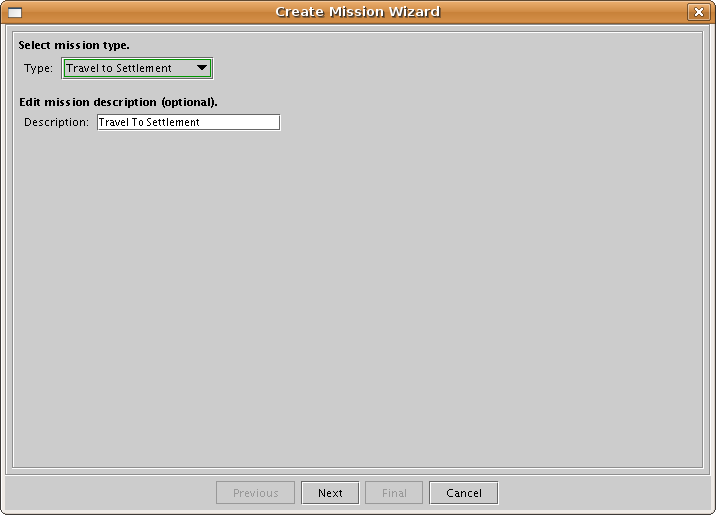
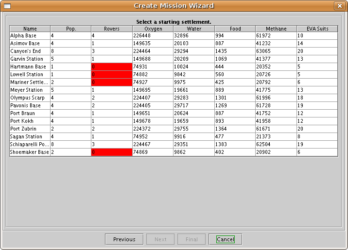
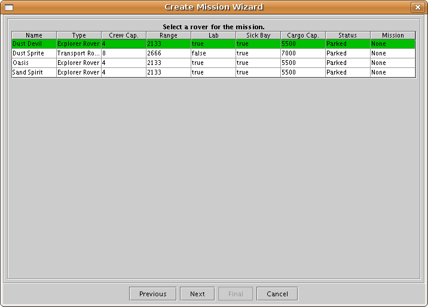
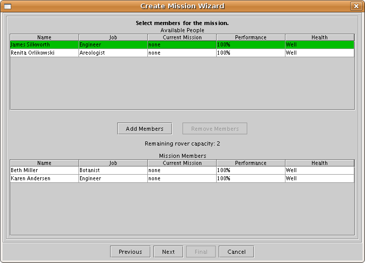
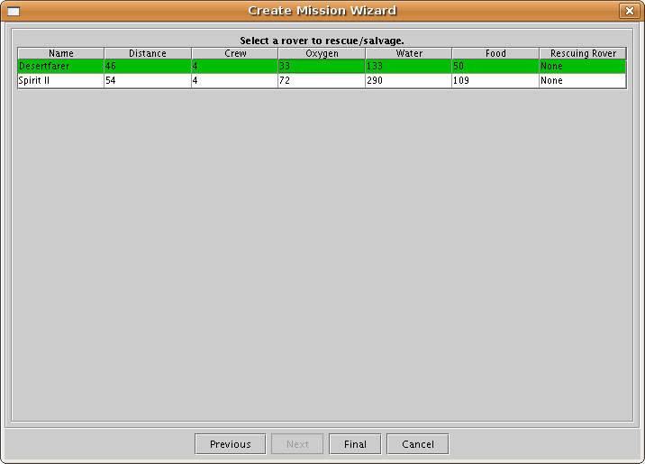
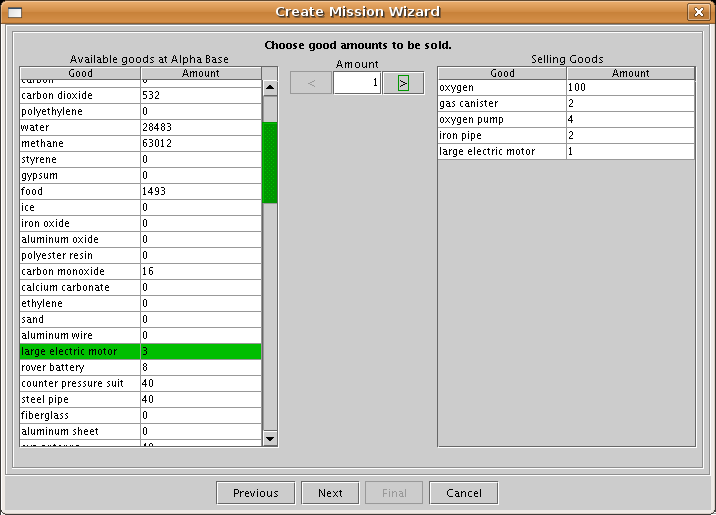
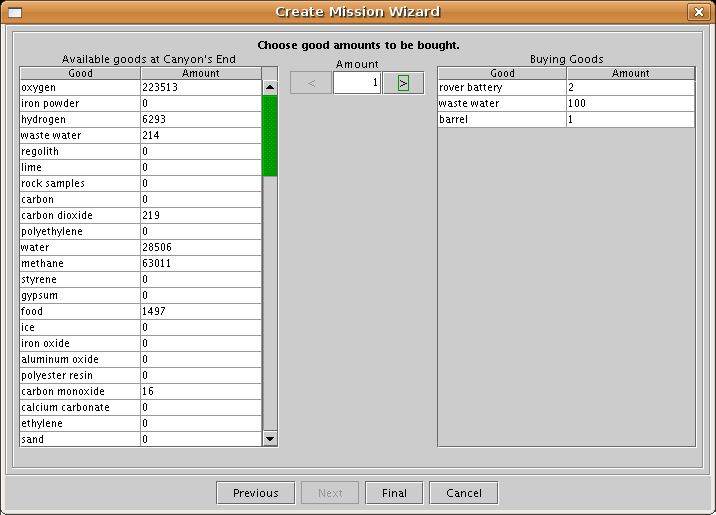

Mars Simulation Project
User Guide
Create Mission Wizard
The create new mission wizard allows the user to create new missions.
|  |
| Create Mission Wizard: First Panel |
The first panel allows the user to select the type of mission from the following options:
- Travel To Settlement - A rover mission to travel from one settlement to another.
- Exploration - A rover mission to travel to and explore one or more sites and collect rock samples.
- Ice Prospecting - A rover mission to travel to a site and collect permafrost ice.
- Regolith Prospecting - A rover mission to travel to a site and collect mineral-rich regolith.
- Rescue/Salvage Vehicle - A rover mission to rescue or salvage a vehicle with its emergency beacon activated.
- Trade - A rover mission to travel to a nearby settlement and trade goods.
The mission description defaults to the selected mission type, but can be edited by the user.
|  |
| Create Mission Wizard: Select Starting Settlement |
The select starting panel allows the user to select a starting settlement for the mission from a list of all the settlements in the simulation. Settlement rows with one or more red cells cannot be selected as starting settlements.
|  |
| Create Mission Wizard: Select Rover |
The select rover panel allows the user to select a rover for the mission from a list of rovers at the starting settlement. Rover rows with one or more red cells cannot be selected for the mission.
|  |
| Create Mission Wizard: Select Members |
The select members panel allows the user to select a group of members participating in the mission from a list of people at the starting settlement.
One or more people can be selected from the Available People list and added to the Mission Members list by clicking the Add Members button. Any people rows in the Available People list with red cells cannot be added to the mission.
Remaining rover capacity is displayed above the Mission Members list. This capacity limits the number of available people who can be added to the mission.
One or more people in the Mission Members can be selected and removed as members by clicking the Remove Members button.
 |
| Create Mission Wizard: Select Destination Settlement |
The select destination settlement panel is the final panel when creating a Travel to Settlement mission or a Trade mission. It allows the user to select a destination settlement for the mission.
The user can select a destination settlement from the list of settlements that are ordered by distance from the mission's starting settlement. Settlement rows with red cells cannot be selected as destination settlements.
If no settlements are selectable as a destination, the user may wish to go back and select if different starting settlement or a mission rover with greater range.
 |
| Create Mission Wizard: Choose Exploration Sites |
The choose exploration sites panel is the final panel when creating an Exploration mission. It allows the user to choose one or more exploration sites for the mission.
The user can click on the blue navpoint flag at an exploration site and drag it to move the location of the site. A green ellipse shows the range boundry of where the navpoint can be dragged.
The Add Site button will add a new exploration site to the mission at a default location. The new site will be added to the list of exploration sites and a blue navpoint flag will be added to the map.
Additional exploration sites can be removed from the exploration site list with the Remove button.
 |
| Create Mission Wizard: Choose Prospecting Sites |
The choose prospecting sites panel is the final panel when creating an Ice Prospecting mission or a Regolith Prospecting mission. It allows the user to choose an ice prospecting site for the mission.
An ice prospecting site is created at a default location. The user can click on the blue navpoint flag and drag it to move the location of the site. A green circle shows the range boundry of where the navpoint can be dragged.
|  |
| Create Mission Wizard: Select Rover to Rescue/Salvage |
The select rover to rescue/salvage panel is the final panel when creating a Rescue/Salvage Vehicle mission. It allows the user to select a rover to be rescued/salvaged for the mission.
The user can select the rover from the list of rovers in the simulation that have their emergency beacons activated. Rover rows with red cells cannot be selected.
If there are no rescue/salvage rovers available, the user may wish to go back and select a different starting settlement or a mission rover with greater range. If there are no rescue/salvage rovers at all in the simulation, the user may wish to end a nearby mission in the Mission tool so that it is rescuable.
|  |
| Create Mission Wizard: Select Goods to Sell |
The select goods to sell panel panel lets the user determine what trade goods to sell to the destination settlement.
The user can select the trade good from the list of available goods on the left, type the number of goods in the center text field, and click the right button to add a number of goods to the sell list. The user can also select a trade good from the sell list to remove a number of them from the sell list.
Red text will display at the bottom of the panel if there is an error in the trade goods the user selected.
|  |
| Create Mission Wizard: Select Goods to Buy |
The select goods to buy panel panel lets the user determine what trade goods to buy from the destination settlement.
The user can select the trade good from the list of available goods on the left, type the number of goods in the center text field, and click the right button to add a number of goods to the buy list. The user can also select a trade good from the buy list to remove a number of them from the buy list.
Red text will display at the bottom of the panel if there is an error in the trade goods the user selected.
Please send questions or comments to mars-sim-users@lists.sourceforge.net
Mars Simulation Project copyright © Scott Davis, 2008
Map data courtesy of NASA Jet Propulsion Laboratory